扉页
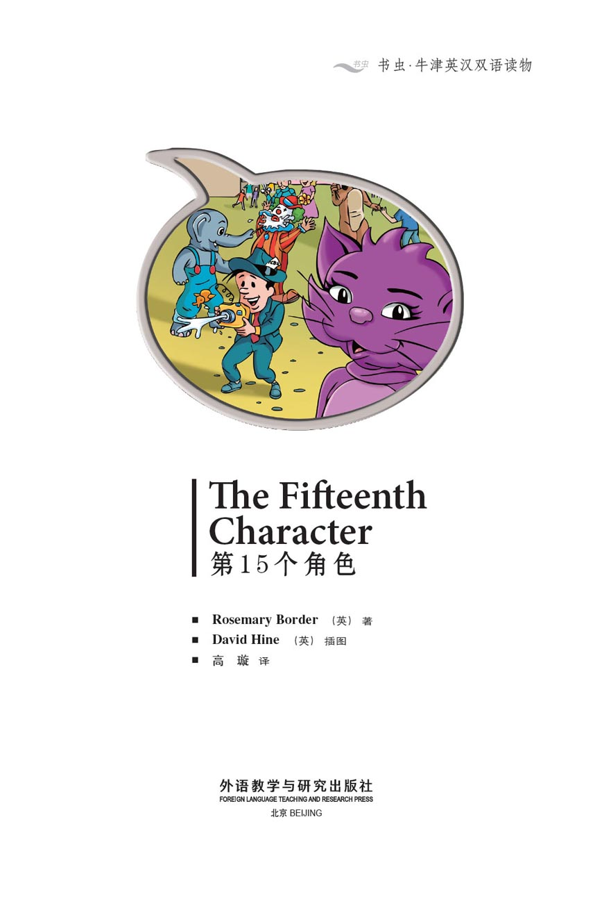
版权页
京权图字：01-2013-7799
Published by arrangement with Oxford University Press for sale in the People's Republic of China only and not for export therefrom. This edition is for sale in the mainland of China only, excluding Hong Kong SAR, Macao SAR and Taiwan.
© Oxford University Press 2008
Oxford is a registered trademark of Oxford University Press
图书在版编目（CIP）数据
第15个角色：英汉对照／（英）博德（Border, R.）著；（英）海因（Hine, D.）绘；高璇译．—北京：外语教学与研究出版社，2013.11
（书虫·牛津英汉双语读物）
书名原文：The fifteenth character
ISBN 978-7-5135-3782-7
Ⅰ．①第… Ⅱ．①博…②海…③高… Ⅲ．①英语—汉语—对照读物②短篇小说—英国—现代 Ⅳ．①H319.4：I
中国版本图书馆CIP数据核字（2013）第271151号
出版人 蔡剑峰
责任编辑 罗来鸥
封面设计 蔡 颖
出版发行 外语教学与研究出版社
社 址 北京市西三环北路19号（100089）
网 址 http://www.fltrp.com
版 次 2013年12月第1版
书 号 ISBN 978-7-5135-3782-7
制售盗版必究 举报查实奖励
版权保护举报电话：（010）88817519
内容简介
内容简介
萨莉·布朗是一名学生，她想当一名教师。她利用假期时间在快乐山岗打工。很多人来快乐山岗乘坐游乐设施、看有趣的卡通人物——“开开心心过一天”。
今天是快乐山岗令人激动的一天——著名歌手扎普要来为一个新的游乐设施揭幕。萨莉非常激动，因为她非常喜欢扎普的歌，并收集了他所有的专辑。萨莉非常想见到扎普，和他说说话，可帕里先生说：“别说话，干活儿！”
但是有人拿走了扎普的新专辑，里面有他尚未公开的新歌……“快乐山岗”不再是个快乐的地方了。
THE FIFTEENTH CHARACTER
THE FIFTEENTH CHARACTER
Sally Brown is a student and she wants to be a teacher. She is working at Happy Hills in her holidays. Lots of people come to Happy Hills, to go on the rides and see the fun characters – and 'Have a Happy Day'.
Today is an exciting day at Happy Hills – Zapp the famous singer is coming to open a new ride. Sally is very excited because she loves Zapp's songs and she has all his CDs. She really wants to meet and speak to Zapp, but Mr Parry says, 'Stop talking and do some work!'
But then someone takes Zapp's new CD with his secret new song on it... and Happy Hills is not a happy place any more.
目录
1 Jobs for today
1
JOBS FOR TODAY
Every day lots of different people come to Happy Hills because there are lots of exciting things to do.
Sally Brown works at Happy Hills in her holiday. She is a student and she wants to be a teacher.
'I need the money,' she tells her family, 'and it's an interesting job.' But she is always very tired in the evening.
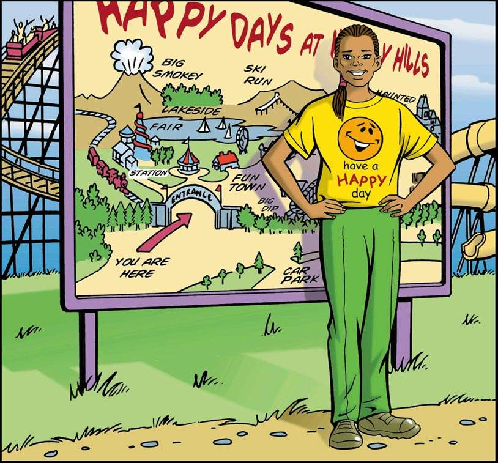
The workers at Happy Hills arrive early in the morning. They all wear clean green trousers and yellow shirts. They must smile a lot and be nice to all the visitors.
Every morning Mr Parry puts a list of Jobs for Today in the workers' canteen. Mr Parry wears different clothes. His shirt is green and his trousers are white, and he wears a red coat with I'm Ken Parry. Can I help you? on his pocket. The visitors call him Ken, but all the workers call him Mr Parry.
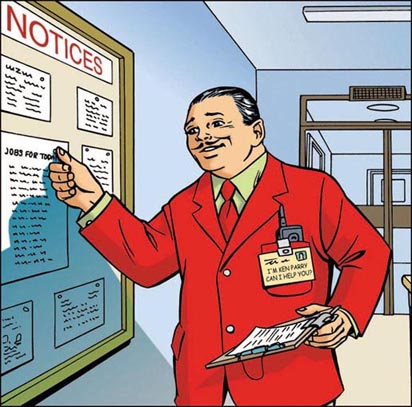
Today Sally arrives at Happy Hills at eight o'clock. On her shirt there is a picture of a smiling face and Have a Happy Day in black and red writing. She goes to the canteen and looks for Mr Parry's list.
'What job am I doing today?' Sally thinks. 'Am I making tea, or helping in the children's play house?'
But Sally is wrong. The list says, 'Sally Brown – Connie Cat. Break: eleven o'clock.'
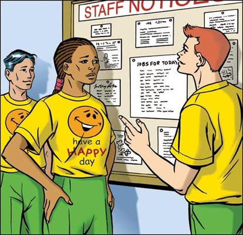
'Oh no!' thinks Sally. Nobody likes wearing the costumes. But at Happy Hills the characters are very important. The visitors like to take photos of their children with Cowboy Joe, Charlie Clown, Baby Blue Eyes, Photo Phil, Big John, Connie Cat, Big Apple, Miss Flower, Edward Elephant and all their friends.
Everybody always asks the same questions, 'Are you very hot in your costume?' and 'How do you eat and drink?'
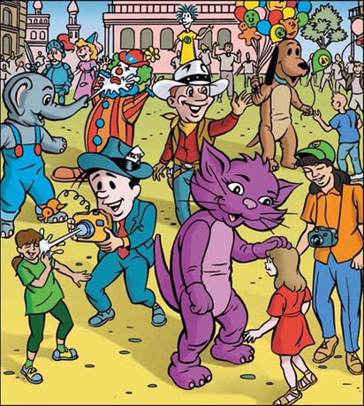
Edward Elephant has the best job. He has a bag of water under his costume. He can spray the visitors with water. And Photo Phil and Charlie Clown make everybody laugh. But Connie Cat cannot do that. She can only say miaow to the children all day.
Sally looks for her costume. A tall man in a cowboy costume is standing beside her.
'Hullo, Sally,' says the cowboy. 'It's me – William.' William is a student too. He is Sally's friend. 'Which costume are you looking for?'
'Connie Cat. When's your break?'
'Eleven o'clock.'
'Me too.'
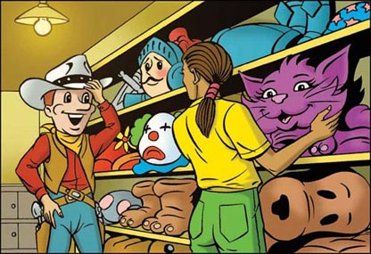
2 Here comes Zapp!
2
HERE COMES ZAPP!
It is nine o'clock. The doors open, but there are not many visitors today. They all have invitations and they show them to Mr Parry. A very famous man is coming to Happy Hills, so Mr Parry is very excited.
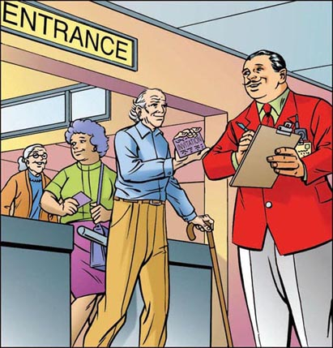
'Zapp's coming today. He's opening the new Zapp-o-copter,' says William to Sally.
'Stop talking and do some work!' says Mr Parry.
Zapp is a singer. Sally loves listening to his songs and she has all his CDs. There is a picture of him in her room too.
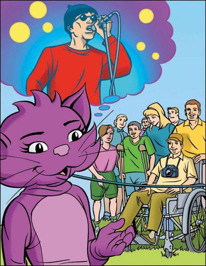
The Zapp-o-copter is very exciting. People can sit in little helicopters and go up and down very fast. The visitors stand behind a blue rope and wait for Zapp.
'Please stay behind the rope,' says Mr Parry.
Suddenly there is a noise in the sky. Everybody looks up.
'It's Zapp's helicopter!' says William.
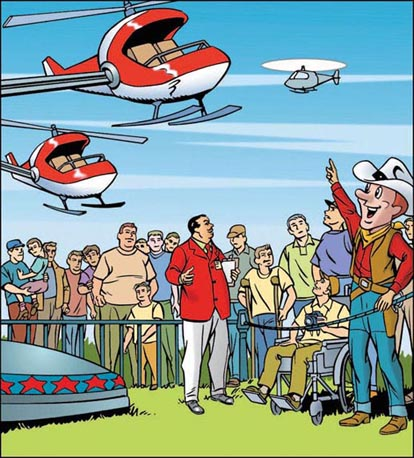
The helicopter comes down and Zapp gets out. He smiles at the visitors.
'Oh – he's wonderful!' says a young girl. She gives Zapp a flower. He gives her a big smile and says, 'Thank you'.
Sally is hot and thirsty in her costume. She wants to talk too, but Mr Parry is watching.
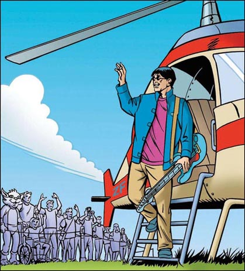
3 Zapp's new song
3
ZAPP'S NEW SONG
Mr Parry takes the singer to the Zapp-o-copter. Zapp cuts the rope.
'Thank you, Zapp. Now please can you sing for us?' says Mr Parry.
'OK! But the people must help me!' he says. He begins to sing. Everybody knows the song and sings it with him.
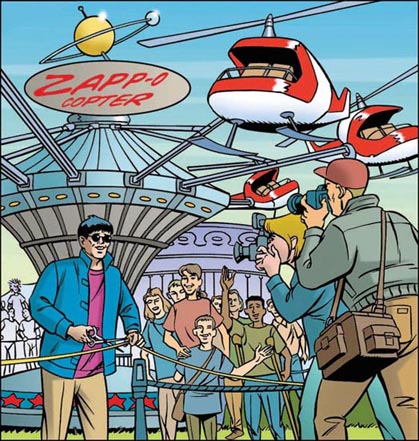
'Thank you,' says Zapp. 'You're all wonderful singers. Now look at this.' He takes a CD out of his pocket. 'This is my new song,' he says.
'Please sing it for us!' say the TV men. But Zapp smiles. 'No, no – you must come to my big concert next Saturday.' He puts the CD in his pocket again.
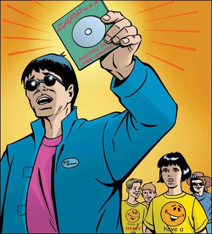
'Now let's go on the Zapp-o-copter!' says Zapp. He sees a teacher with some children. 'Would they like to come too?' he asks her. 'Of course,' says the teacher. They help the children into the helicopters.
Zapp smiles and smiles. The photographers take lots of pictures. Photo Phil arrives too. He is one of the Happy Hills characters. He takes a photo of the children – and sprays them with water! Everybody laughs.
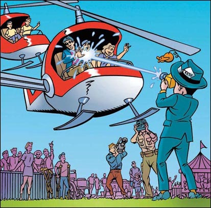
Zapp is having a wonderful day. He speaks to the TV people. The photographers take photos of him with all the characters. Zapp meets Charlie Clown. Charlie gives him a flower – and the flower sprays him with water. Everybody laughs.
Sally meets Zapp too, and she is very excited. But she cannot talk to him because she is wearing her cat costume and Mr Parry is watching.
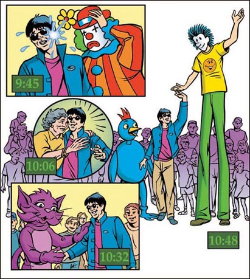
4 Where's Zapp's CD?
4
WHERE'S ZAPP'S CD?
'Come on, it's eleven o'clock,' says William. 'Let's go to the canteen for our break. We've got ten minutes.'
They sit down in the canteen and take off their heads. Sally is thirsty. Her face is hot and red. William is hot and thirsty too. They have a long drink of cold water. 'That's good!' William says. Then he looks at his watch. 'Ten past eleven,' he says. 'Come on, Sally. Back to work!'
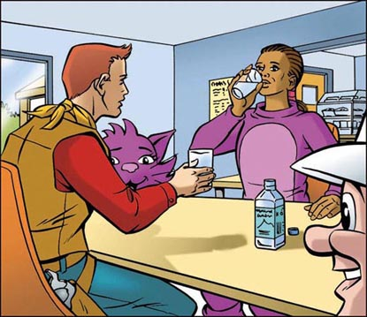
They finish their drinks and put their heads on again.
Suddenly a lot of people come into the canteen.
'What's the matter?' says William.
'Zapp's CD!' says Mr Parry. 'He can't find it!'
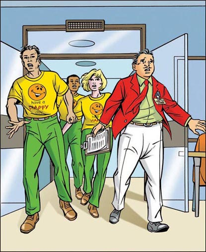
Everybody is unhappy, but Zapp is angry too.
'That CD's important, Parry,' he says. 'You must find it.'
'I'm doing my best, Zapp,' says Mr Parry. 'Don't hit me, please – I'm doing my best!'
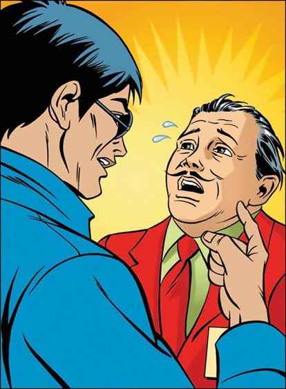
A lot of things happen very quickly. The visitors want to go home, but suddenly Mr Parry closes all the doors.
'Nobody can leave,' he says. 'I'm sorry, but Zapp's CD's very important and we must find it.'
Mr Parry makes a telephone call. Very soon four police arrive in a big white police car. They ask a lot of questions.
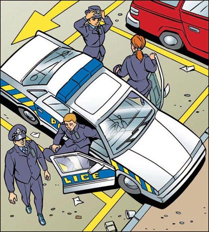
The police look everywhere for the CD. They read Mr Parry's list of visitors. They count the visitors carefully and look in all their pockets and bags.
There is a lot of noise. People are angry and tired. They want to go home now. And Zapp is speaking very quietly into a little black telephone. Photo Phil goes to him and says, 'Smile, please!'
'Go away!' says Zapp angrily.
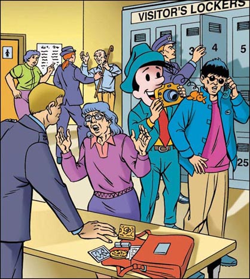
Now the police want to talk to the workers. One stays with the visitors and three police speak to the workers in the canteen. Zapp comes with the police.
'You must find that CD!' says Zapp.
'We're doing our best, Zapp,' say the police.
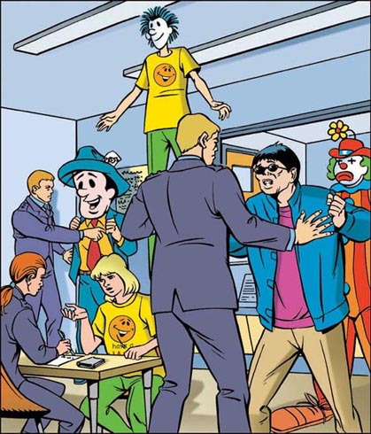
5 The fifteenth character
5
THE FIFTEENTH CHARACTER
Sally waits quietly with the other workers. She looks at Mr Parry's Jobs for Today list and counts the names.
There are twenty-nine names on the list today. Fifteen people are helpers. They wear green trousers and yellow shirts and help the visitors. Fourteen people are characters and wear costumes.
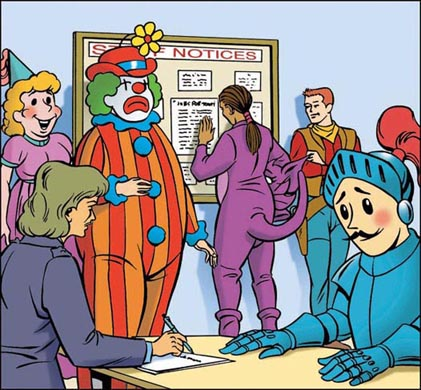
'Wait a minute,' thinks Sally. 'There are fourteen characters on the list. But there are fifteen characters here!'
She reads the list again, very, very carefully. 'Edward Elephant – yes, he's here. Connie Cat – that's me. Cowboy Joe – that's William. Photo Phil – yes, he's here. Big Apple – yes. Sir Laugh-a-Lot and Lady Love-a-Little... Wait a minute, Charlie Clown isn't on the list – but Charlie's here in this room!'
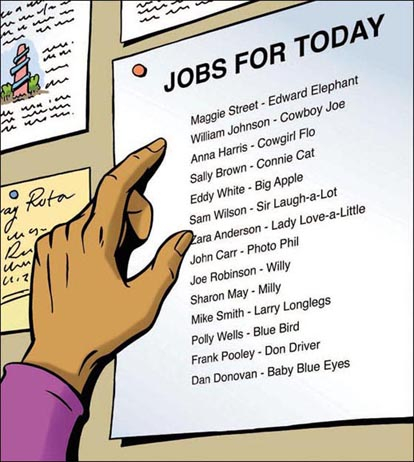
'Excuse me, Mr Parry,' says Sally. 'There are fourteen characters on your list, but there are fifteen in the room now. Charlie Clown isn't on the list, but he's here.'
Mr Parry reads the list and counts the characters. 'You're right, Sally,' he says.
'Take off your heads!' Mr Parry says to the characters.
They take off their heads.
Charlie Clown is a woman.
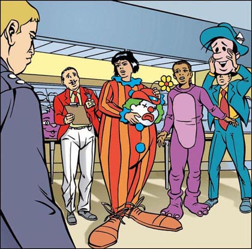
'Why are you wearing that costume?' asks Mr Parry.
The woman begins to run away, but William stops her.
The police take off her costume – and find a big pocket. In it they find Zapp's CD. The singer smiles again.
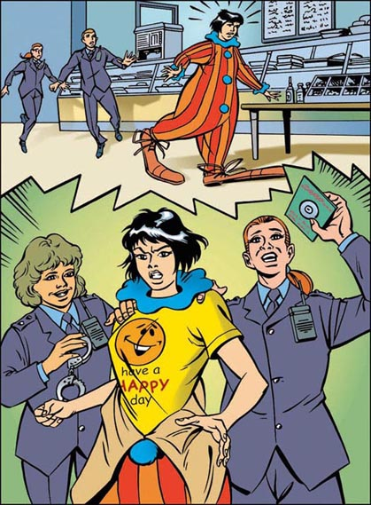
It is Saturday night. Sally and William are in London because they are going to Zapp's concert. There are lots of excited people and TV photographers outside the hall. Everybody wants to hear Zapp's new song.
'Where are your tickets?' says the man at the door to Sally.
'We haven't got any tickets,' says Sally. The man begins to look angry. Sally smiles and takes something out of her pocket. 'Is this invitation OK? It's from Zapp.'
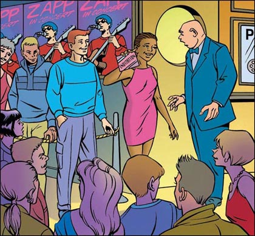
GLOSSARY 词汇表
GLOSSARY
词汇表
break n. a time when people can stop work to have tea or coffee 工间休息
canteen n. a room where workers eat and drink 食堂，员工餐厅
character n. a person or animal in a story or film 角色
concert n. a time when someone plays or sings in a big room for a lot of people 音乐会
costume n. special clothes 化装服，道具服
count v. number objects or people 数数，点数
famous adj. someone who many people know is famous 著名的，出名的
hall n. a big room where someone sings or plays music for a lot of people 礼堂，大厅
holiday n. a time when we do not go to work 假期
invitation n. a letter asking someone to come to a party or concert 邀请函，请柬
job n. work that people do for money 工作
list n. a lot of names on a piece of paper 名单，清单
miaow n. the sound a cat makes 喵（猫叫声）
pocket n. a place in your shirt or trousers where you can put things 口袋，衣袋
song n. something that people sing 歌曲
spray v. send out water through the air 喷，喷洒
ACTIVITIES 阅读练习
The Fifteenth Character
ACTIVITIES
阅读练习
ACTIVITIES
Before Reading
1 Look at the front cover of the book. Now complete these sentences.
1) This story happens...
a □ in the future.
b □ in today's world.
c □ sometime long ago.
2) The character looks...
a □ frightening.
b □ exciting.
c □ funny.
2 Read the back cover of the book. Guess the answers to these questions.
1) What is Happy Hills?
2) What does Sally do?
3) What goes wrong?
4) Is Zapp a man or a woman?
ACTIVITIES
While Reading
1 Are these sentences true (T) or false (F)?
1) Sally Brown is a student.
T □／F □
2) The workers at Happy Hills must wear white shirts and red trousers.
T □／F □
3) Sally always puts a list of Jobs for Today in the canteen.
T □／F □
4) The visitors like to take photos of their children with the Happy Hills characters.
T □／F □
2 Match the sentence halves to make five complete sentences.
1) Connie Cat cannot make everybody laugh...
2) Edward Elephant has the best job...
3) Mr Parry is excited...
4) William is wearing a cowboy costume...
5) Sally has a picture of Zapp in her room...
a because today he is Cowboy Joe.
b because a very famous man is coming to Happy Hills.
c because she loves his songs.
d because she can only say miaow to the children all day.
e because he can spray the visitors with water.
3 Are these sentences true (T) or false (F)?
1) Zapp comes to Happy Hills in a helicopter.
T □／F □
2) Zapp sings his new song.
T □／F □
3) The photographers take lots of pictures of Zapp with the characters.
T □／F □
4) Zapp smiles and smiles.
T □／F □
4 Join the sentences with and or because.
1) Charlie Clown gives Zapp a flower. The flower sprays him with water.
2) Sally can't talk to Zapp. She is wearing her cat costume.
3) Sally is thirsty. Her face is hot and red.
5 Who says or thinks these sentences?
1) 'Nobody can leave.'
2) 'Smile please!'
3) 'You must find that CD!'
4) 'Wait a minute... There are fifteen characters here!'
6 Answer these questions.
1) Where do the policemen find Zapp's CD?
2) Who stops the girl?
3) Where do Sally and William go on Saturday night?
4) Why don't they need tickets?
ACTIVITIES
After Reading
1 Put these twelve sentences in the right order to tell the story.
a 1 Sally comes to work and looks at Jobs for Today.
b □ 'Take off your heads!' Mr Parry tells the characters.
c □ Zapp tells everybody about his new CD.
d □ Zapp arrives in a red helicopter.
e □ Mr Parry runs into the canteen. 'Zapp can't find his CD!' he says.
f □ Sally counts the characters. 'There are fourteen characters on the list,' she thinks, 'but there are fifteen characters here!'
g □ The singer cuts the rope and opens the Zapp-o-copter.
h □ Zapp gives Sally an invitation to his big concert.
i □ Today Sally is Connie Cat and her friend William is Cowboy Joe.
j □ Charlie Clown gives Zapp a flower – and the flower sprays him with water.
k □ Four policemen arrive and ask a lot of questions.
l □ The policemen find the CD in Charlie Clown's pocket.
2 Choose the right words for each picture. Write a letter in each box.
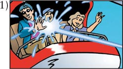 The children are saying: □
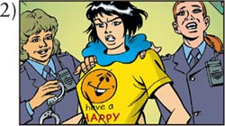 The police are saying: □
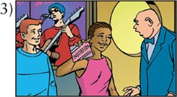 Sally is saying: □
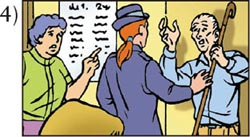 The policewoman is saying: □
a 'What have you got in your pockets, please?'
b 'This is exciting!'
c 'Come on – you're coming with us.'
d 'Is this invitation OK? It's from Zapp.'
TRANSLATION 参考译文
TRANSLATION 参考译文
The Fifteenth Character
第15个角色
1 今日工作
每天，有很多形形色色的人来到快乐山岗，因为在这里有很多令人激动的事情可以做。
萨莉·布朗假期里在快乐山岗打工。她是一名学生，将来想当一名教师。
“我需要钱，”她跟家人说，“而且这是一份有趣的工作。”不过到了晚上她总是很累。
快乐山岗的员工每天早上很早就到了。他们都穿着干净的绿裤子和黄T恤。他们必须常常微笑，对所有的游客友好相待。
每天早上，帕里先生会把一份“今日工作”清单贴在员工餐厅里。帕里先生的穿着和其他员工不同。他穿着绿衬衫和白裤子，外加一件红色的外衣，衣服口袋上别着胸牌，上面写着：“我是肯·帕里。有什么可以帮您的吗？”游客们都叫他肯，但是所有的员工都叫他帕里先生。
今天，萨莉8点钟到了快乐山岗。她的T恤上印着一个笑脸，笑脸下面是黑色和红色文字组成的“开开心心过一天”。她去餐厅看帕里先生的工作任务清单。
“今天我做什么工作呢？”萨莉心想，“是泡茶，还是在儿童游戏室里帮忙？”
但是萨莉错了。清单上写着：“萨莉·布朗——扮康妮猫。休息时间：11点。”
“哦，不！”萨莉想。没有人喜欢穿道具服。但是在快乐山岗，这些卡通角色非常重要。游客们喜欢让他们的孩子和牛仔乔、小丑查利、蓝眼睛宝贝、大摄影师菲尔、大约翰、康妮猫、大苹果、花小姐、大象爱德华以及他们所有的好朋友合影。
每位游客总是问相同的问题：“你们穿着道具服会很热吗？”“你们怎么吃东西，怎么喝水呢？”
大象爱德华的工作最好。他的道具服里有一袋水，他可以用水喷游客。大摄影师菲尔和小丑查利能把每个人都逗笑。可康妮猫没法这样做。她只能整天对着孩子们说“喵”。
萨莉寻找她的道具服时，一个穿牛仔道具服的高个子男人站在了她的旁边。
“嗨，萨莉。”牛仔说，“是我——威廉。”威廉也是学生，他是萨莉的朋友。“你在找哪套服装？”
“康妮猫。你什么时候休息？”
“11点。”
“我也是。”
2 扎普来了！
9点，快乐山岗开门了。不过今天的游客不多。来的游客都有请柬，他们向帕里先生出示自己的请柬。一位大名人要到快乐山岗来，帕里先生非常激动。
“扎普今天要来，他要为新的扎普直升机揭幕。”威廉对萨莉说。
“别说话，干活儿！”帕里先生说。
扎普是一名歌手。萨莉非常喜欢听他的歌，她有扎普所有的CD。她的房间里还有一张他的照片。
扎普直升机非常刺激。游客可以坐在小直升机里，迅速地上升下降。游客们都站在一条蓝色的绳子后面等待着扎普。
“请站在绳子后面。”帕里先生说。
突然天空中传来一阵轰鸣。人们都抬头看。
“是扎普的直升机！”威廉说道。
直升机降落。扎普走了出来，他向游客们微笑。
“天哪！他太棒了！”一个女孩说。她送给扎普一枝花。扎普冲她灿烂一笑说：“谢谢。”
萨莉穿着道具服，又热又渴。她也想说话，可是帕里先生盯着呢。
3 扎普的新歌
帕里先生把扎普带到了扎普直升机前。扎普为活动剪彩。
“谢谢你，扎普。现在能为我们唱首歌吗？”帕里先生说。
“好！不过大家要一起来！”扎普说。他开始唱歌。每个人都知道这首歌，大家一起跟着唱起来。
“谢谢！”扎普说，“你们唱得都很棒，嘿，看看这个。”他从口袋里拿出一张CD。“这是我的新歌。”他说。
“唱给我们听听吧！”电视台的人说。但是扎普笑了笑。“不，不行——你们下周六一定要来听我的大型演唱会。”说完他把CD放回了口袋。
“现在我们上扎普直升机吧！”扎普说。他看到一位老师带着几个学生。“他们也想一起来玩吗？”他问那个老师。“当然想！”老师回答。他们帮孩子们登上直升机。
扎普笑容可掬。摄影师们拍了很多照片。大摄影师菲尔也来了。他是快乐山岗的卡通角色之一。他给孩子们拍了一张照片——还朝他们喷水！每个人都哈哈大笑。
扎普度过了快乐的一天。他和电视台的人交谈。摄影师拍了扎普和所有卡通角色的合影。扎普见到了小丑查利。查利送给扎普一朵花——这朵花朝扎普喷水。大家都开怀大笑。
萨莉也与扎普见了面，她非常兴奋。可是她没法和扎普说话，因为她穿着猫的道具服，而且帕里先生盯着呢。
“快点儿，11点了。”威廉说。“我们去餐厅休息会儿吧。我们有10分钟的时间。”
他们在餐厅坐下来，摘掉了头套。萨莉觉得口渴。她的脸又红又烫。威廉也是又热又渴。他们喝了很多凉水。“真爽！”威廉说。接着他看了看手表说：“11点10分了。来吧，萨莉，该回去工作了！”
他们把水喝完，重新戴上头套。
突然很多人来到了餐厅。
“出了什么事？”威廉问。
“扎普的CD！”帕里先生说，“他找不到CD了！”
大家都不太开心，扎普也怒气冲冲。
“那张CD非常重要，帕里。”扎普说，“你必须找到它。”
“我正在尽力找，扎普。”帕里先生说，“你别动手，求求你——我正在尽力找！”
接下来瞬间发生了很多事情。游客们想要回家，但是帕里先生突然关上了所有的门。
“谁都不许离开。”他说，“非常抱歉，但是扎普的CD非常重要，我们必须找到它。”
帕里先生打了一个电话。不一会儿，四名警察开着一辆大型白色警车到了。他们问了很多问题。
警察到处寻找CD。他们查看了帕里先生的游客名单，仔细清点了游客人数，还检查了游客所有的口袋和包。
到处都是闹哄哄的。人们又气又累，现在都想回家了。扎普拿着一个黑色的小手机在低声地打电话。大摄影师菲尔走过去说，“来，笑一下！”
“走开！”扎普生气地说。
现在警察要与快乐山岗的员工们谈一下。一名警察待在游客那边，另外三名警察则在餐厅里询问员工。扎普也和几名警察一起过来了。
“你们必须找到那张CD！”扎普说。
“我们正在尽力，扎普。”警察说。
5 第15个角色
萨莉和其他员工一起静静地等着。她看着帕里先生的“今日工作”清单，数着上面的名字。
今天清单上有29个名字。其中15个人是助手。他们穿着绿裤子和黄T恤，为游客提供帮助。14个人是卡通角色，穿着道具服。
“等等，”萨莉想，“清单上有14个卡通角色，可是这里却有15个！”
她又看了一遍清单，看得非常非常仔细。“大象爱德华——嗯，他在这儿。康妮猫——是我。牛仔乔——是威廉。大摄影师菲尔——嗯，他在这儿。大苹果——在。爱笑先生和惜爱小姐……等一下，小丑查利不在单子上——可现在查利在这个房间里！”
“打扰一下，帕里先生。”萨莉说，“你的清单上有14个卡通角色，但是现在房间里有15个。小丑查利不在清单上，可他却在这儿。”
帕里先生看了看清单，数了数卡通角色。“你说得没错，萨莉。”帕里先生说。
“摘掉你们的头套！”帕里先生对卡通角色们说。
他们都摘掉了自己的头套。
小丑查利是一个女人。
“你为什么穿着这身衣服？”帕里先生问。
这个女人拔腿就跑，但是威廉拦住了她。
警察脱掉了她的道具服——发现了一个大口袋。他们在口袋里找到了扎普的CD。扎普又露出了笑容。
周六的晚上，萨莉和威廉来到了伦敦，因为他们要参加扎普的演唱会。音乐厅外面有很多激动的歌迷和电视台摄影记者。大家都想听扎普的新歌。
“你们的票呢？”门口的工作人员对萨莉说。
“我们没有票。”萨莉说。工作人员面露不悦。萨莉笑着从口袋里拿出一样东西。“这张请柬可以吗？是扎普给的。”
封底
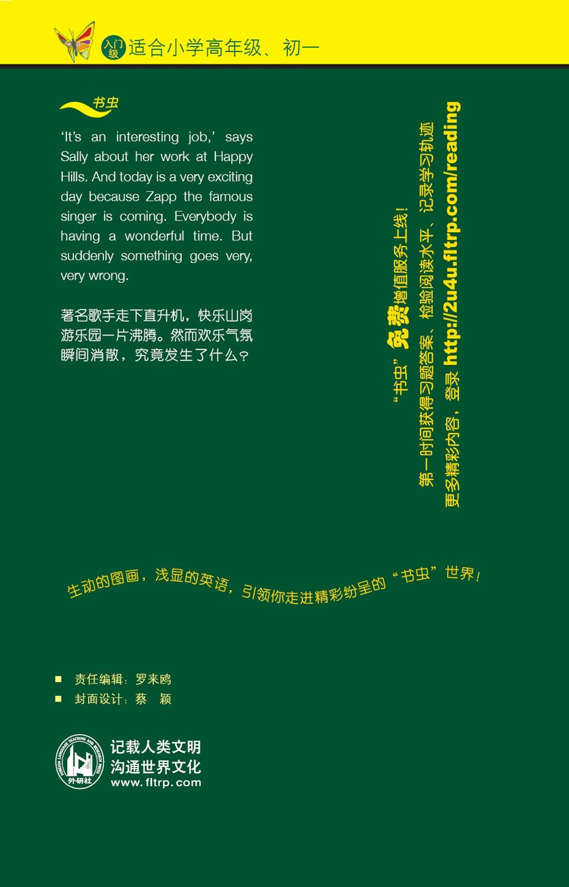